My favourites
Recipes you love, ready for next time. Saved in this browser on this device; clearing site data removes them.
Separate ingredients with commas, + or spaces; recipes must include each one. Optional ingredients are included. Times allow for prep and cooking; estimates, extra waiting and prepared sauces are noted.
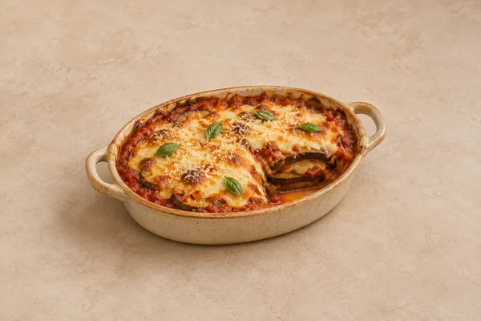
Aubergine Parmigiana

Baked Ziti

Base Gravy

Jack Daniel’s Style BBQ Sauce
Breakfast Wraps
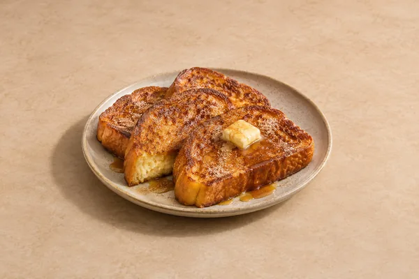
Brioche French Toast with Cinnamon Sugar & Maple Butter

Broccoli & Stilton Soup

Broccoli Quiche
Includes blind baking and a short rest.

Caramel Fudge
Needs overnight chilling before cutting.

Spaghetti Carbonara

Carrot Cake
Allows time for the cakes to cool before icing.

Carrot & Coriander Soup
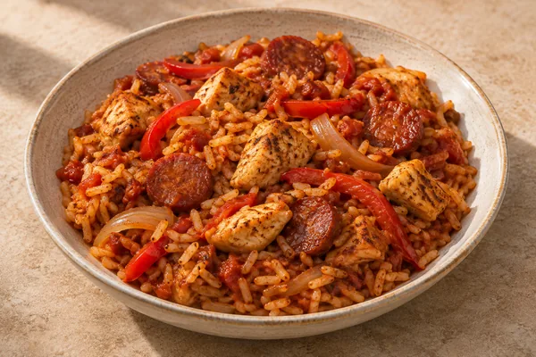
Chicken & Chorizo Jambalaya
Includes the five-minute rest.
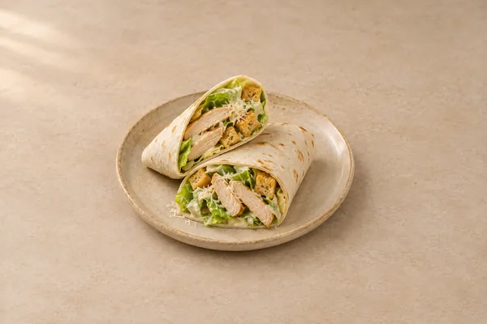
Chicken Caesar Wraps
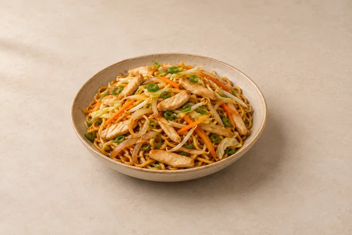
Chicken Chow Mein
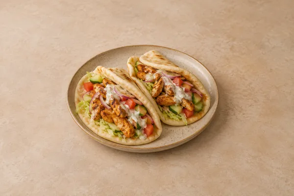
Chicken Shawarma Flatbreads
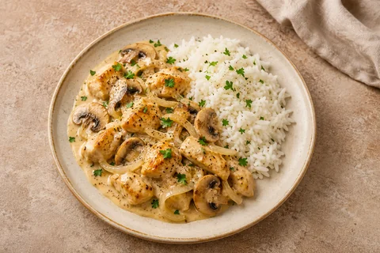
Chicken Stroganoff
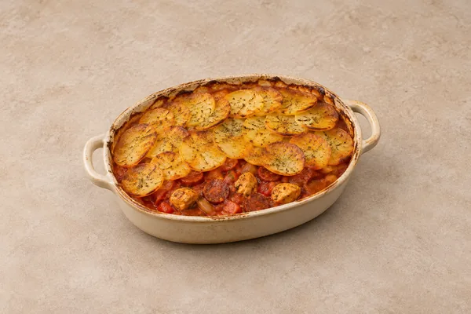
Chicken, Chorizo & Potato Bake

Chocolate Chip Cookies
Optional overnight dough chilling is extra.

Coconutty Caribbean Soup
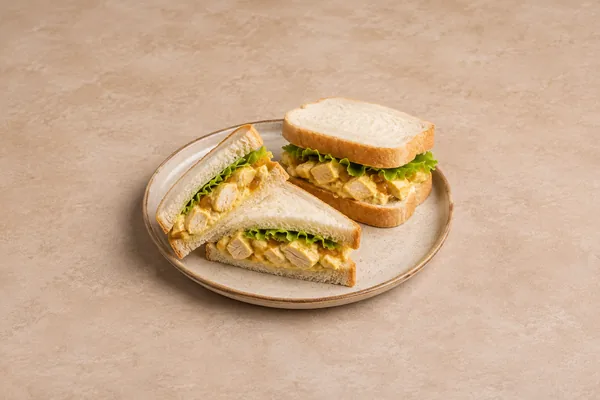
Coronation Chicken Sandwiches

Cottage Pie
Oven method. The alternative slow-cooker method takes longer.
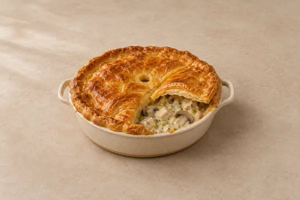
Creamy Chicken, Leek & Mushroom Pie

Creamy Garlic Chicken

Pastina

Crispy Chilli Beef
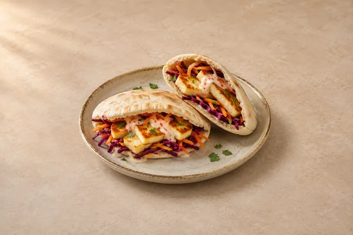
Crispy Halloumi Pittas
Croque Monsieur

Crème Brûlée
Allow additional cooling and fridge time until the custards have set.
Fluffy Pancakes

French Onion Soup

Ginger and Lime Chicken Noodle Soup
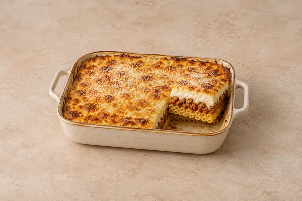
Greek Beef Pastitsio
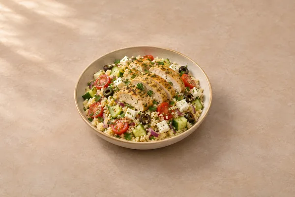
Greek Chicken Couscous Salad

Harissa Prawn Orzo

Harissa Salmon with Crispy Potatoes & Lemon Yoghurt

Indonesian Chicken Poke Bowl
Allow the longer time if the chicken and sweet potato need separate air-fryer batches.

Jack Daniel’s Glazed Chicken
Includes making the glaze from scratch, then roasting the chicken and wedges.

Jalfrezi Curry
Uses prepared base gravy and pre-cooked main ingredients.

Key Lime Pie
Includes at least six hours in the fridge, plus any extra cooling.

Korean Style Gochujang Beef and Pork Bibimbap
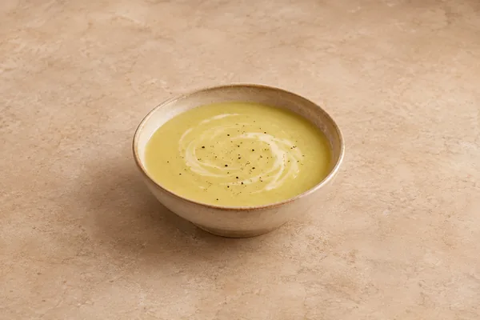
Leek and Potato Soup

Lemon Cheesecake
Allow additional cooling and fridge time until fully chilled.

Lemon Chicken Salad

Lemon, Garlic & Oregano Chicken Traybake
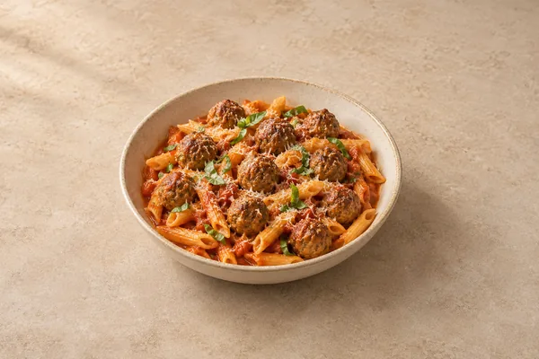
Meatball Penne

Mediterranean Pasta Salad

Minestrone

Moghul Curry
Uses prepared base gravy and pre-cooked meat.
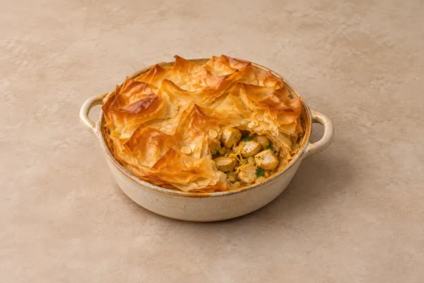
Moroccan Chicken Filo Pie

Moroccan × Japanese Rice Bowl
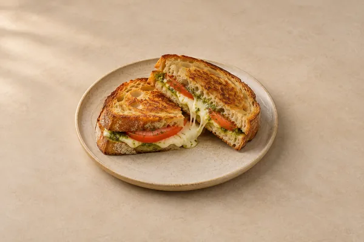
Mozzarella Pesto Toasties
Nacho Cheese Sauce
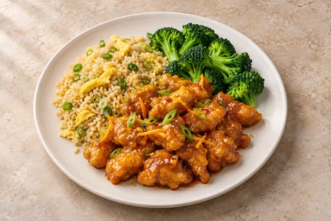
Panda Express Orange Chicken
Includes the sauce, chicken and egg-fried rice.

Panda Express Orange Chicken Sauce
Sauce only; does not include frying chicken.

Pathia Curry
Uses prepared base gravy and pre-cooked main ingredients.

Pea & Asparagus Soup
For serving hot; allow extra chilling time if serving cold.
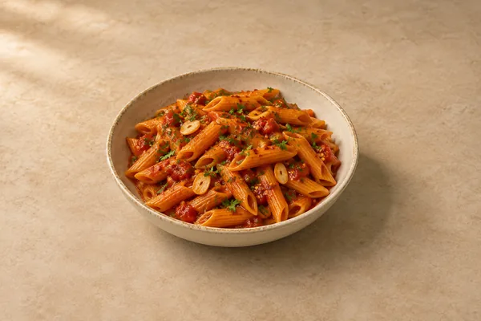
Penne Arrabbiata

Pesto Pasta Salad

Roasted Red Pepper Soup
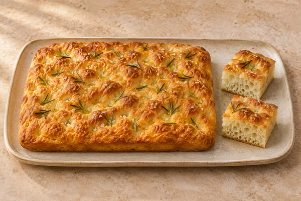
Rosemary Focaccia
Plus cooling; includes proving.

Salt-and-Pepper Chicken

Satay Beef Noodles
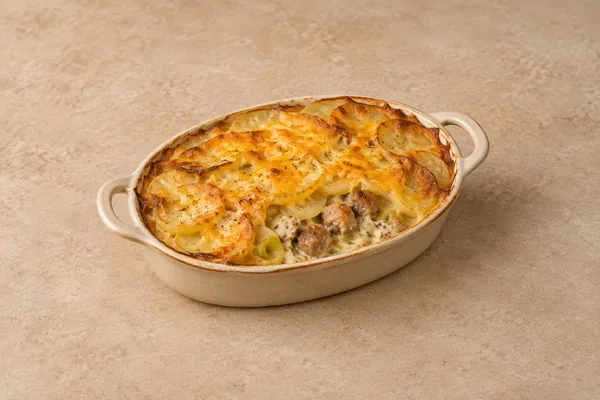
Sausage, Leek & Mustard Gratin
Shakshuka

Slow Cooker Beef Bourguignon
Low setting, followed by the high-heat finish.

Slow Cooker Beef Rendang
Includes the final high-heat stage.

Slow Cooker Chicken Chasseur
Low setting.

Slow Cooker Chicken, Chorizo & Butter Bean Stew
Includes the final high-heat stage.

Slow Cooker Smoky Hot Chilli Con Carne
Low setting; high setting takes about 3¼–4¼ hours including prep.

Slow Cooker Tuscan Chicken
Includes the cream and spinach finish.

Smash Cheeseburgers

Sofritto Ragu

Sofritto Ragù Lasagne
Uses prepared ragù; includes resting. Allow extra time to make the ragù from scratch.

Sofritto Ragù with Tagliatelle
Uses prepared ragù. Allow extra time to make the ragù from scratch.
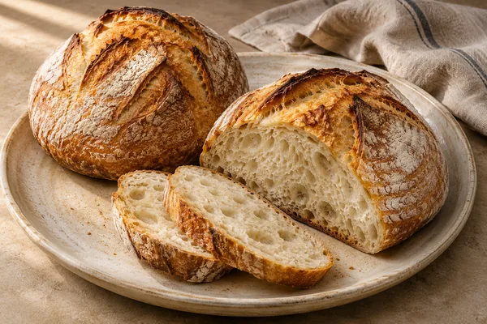
Sourdough
Includes overnight proving. Starting a new starter takes at least five days.
Spiced Carrot & Lentil Soup
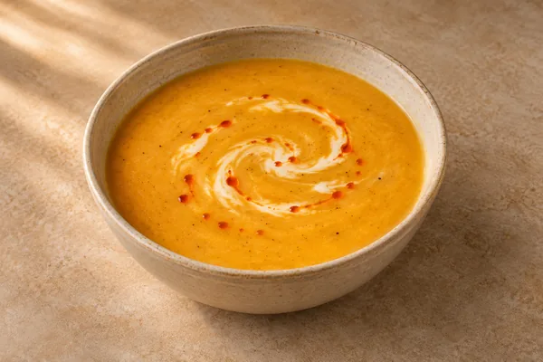
Spiced Parsnip Soup
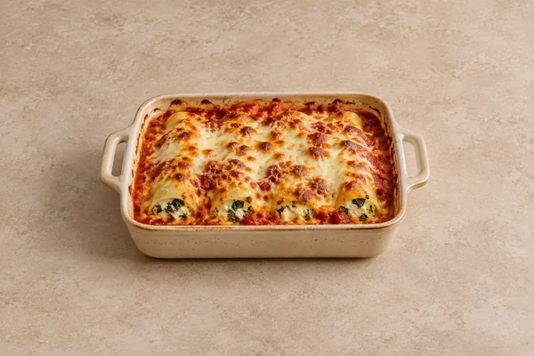
Spinach & Ricotta Cannelloni
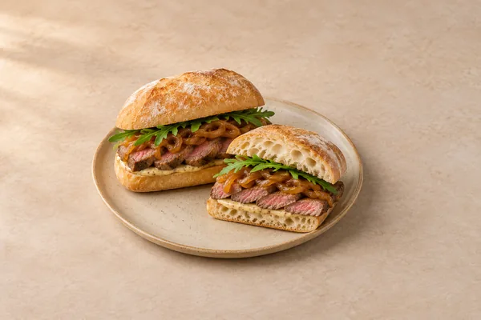
Steak Ciabatta

Sticky Gochujang Chicken Noodles
Thai Chicken Curry

Thai Curry Rice Bowl

Tiger Bread
Plus cooling; includes proving.

Truffle Rigatoni with Tenderstem Broccoli